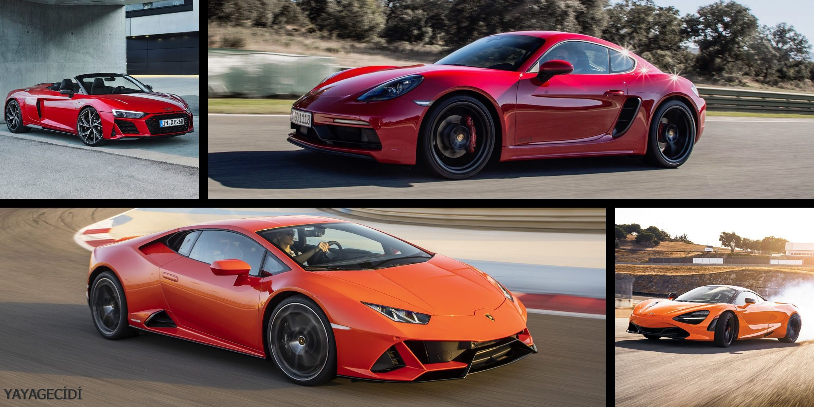
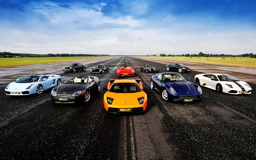
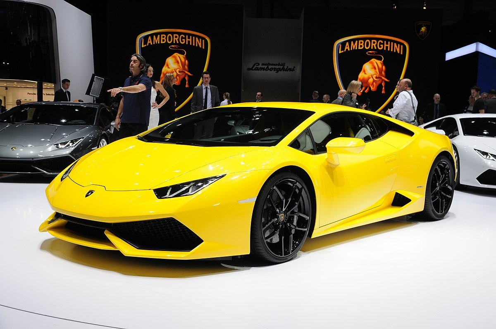
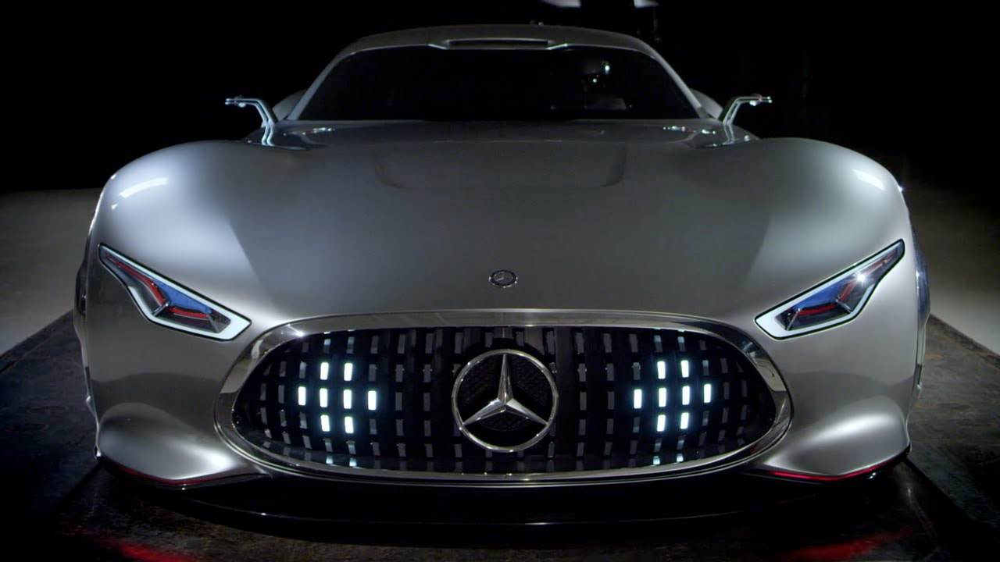
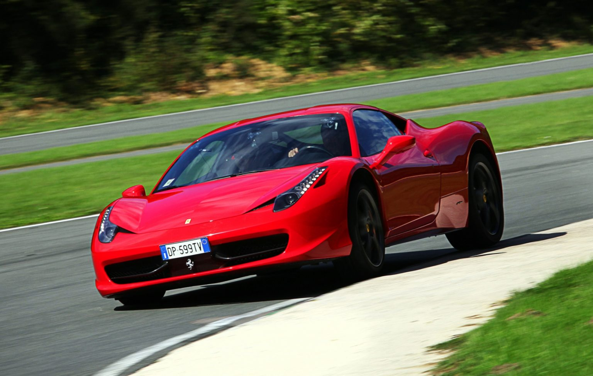
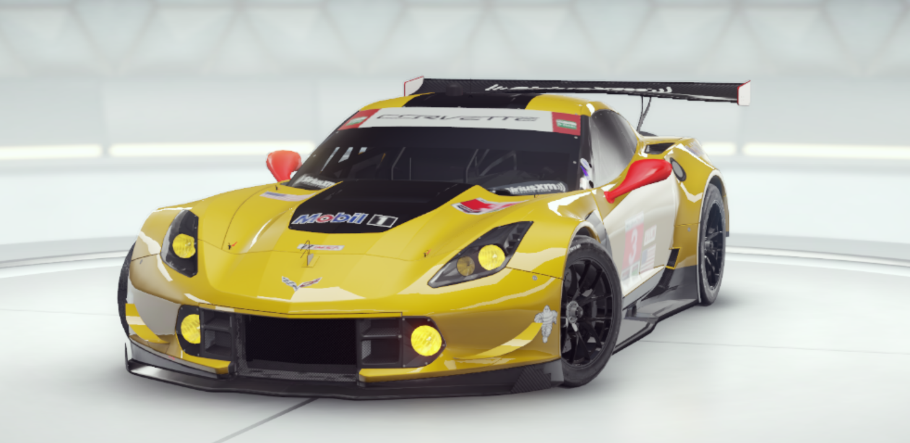
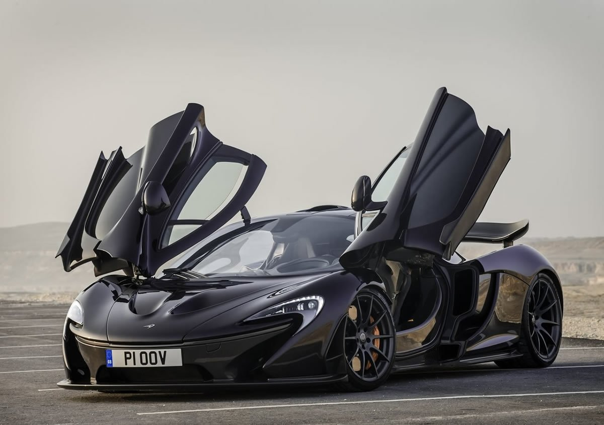
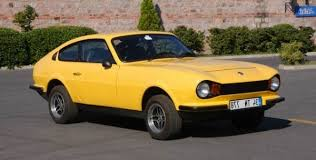
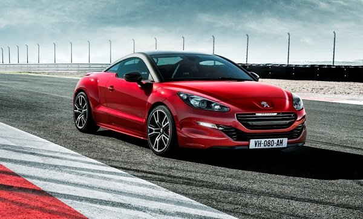

<!DOCTYPE html>
<html lang="tr">
<head>
    <meta charset="UTF-8">
    <meta http-equiv="X-UA-Compatible" content="IE=edge">
    <meta name="viewport" content="width=device-width, initial-scale=1.0">
    <title>Arabalar</title>
</head>
<body>
    
</body>
</html>
<head> <link rel="stylesheet" type="text/css" href=".css"/></head>
<br>
<center><div>
    <!--Link Start-->
        <a href="anasayfa.html">Anasayfa</a> |
        <a href="arabalar.html">En İyi Spor Arabalar</a> |
        <a href="aboutus.html">Hakkımızda</a> |
        <a href="contact.html">İletişim</a>
      <!--Link End-->
    </div></center>


    <center><h2>En İyi Spor Arabalar</h2></center>
    <center></center>

    <p>Küresel otomotiv endüstrisinin tarihi, en iyi arabayı yaratma arzusunun örnekleriyle doludur. Japon, Amerikan, Alman ve diğer üreticiler ara sıra güncellenmiş bir gövde ve gelişmiş teknik performans alan yeniden biçimlendirilmiş modeller ürettiler.
    <p>  Ancak, mükemmel araba asla gelmedi. Ancak dünya, güzelliklerinin birçok şaşırtıcı ve etkileyici modelini gördü. Dünyanın en güzel on spor arabasını tanımanızı öneriyoruz.</p>

    <center><h3>Spor araba nedir? En iyi spor arabalar, en ucuz spor arabalar hangileri? Gelin inceleyelim!</h3></center>
    <center></center>
    <p>Araba sektörü günümüzde almış başını gidiyor. Hemen hemen herkesin arabası var. Peki en iyi ve en güzel arabalar hangisi ? Tabi ki kişiden kişiye göre zevklerin ve renklerin değişeceğini bildiğimizden biz bu listede sadece en iyi spor arabalar için bir liste yaptık. Listemizdeki arabalar en ucuz spor arabalar arasına pek girmemekle beraber ulaşması da bir o kadar yorucu bildiğimiz ve yaygın olan markalardan olan Peugeot, BMW veya Mercedes gibi markalar listemizde en ulaşılabilir sayılabilecek araçlardan olacaktır.</p> 
    
    <center><h3>Spor Araba Nedir?</h3></center>
    <p> Spor arabalar, genellikle iki kapılı olup çok yüksek beygir gücüne sahip araçlardır. Çok hızlı olmakla kalmayıp bir o kadar da manevra kabiliyetine sahip araçlara spor araba denir. Spor arabaları aldığınızda işiniz bitmiyor. Üstüne bir o kadar da modifiye parça ekleyip çıkartarak aracınızı en üst seviyeye çıkartabiliyorsunuz. Kısacası spor arabalar yüksek manevra ve hız kabiliyetine sahip araçlara denir.</p>
    
    <ul>
        <li>Lamborghini Huracan</li>
    </ul>
    <center></center>        
    <p>Lamborghini Huracan, en iyi spor arabalar listemizin başında yer alan muazzam bir araç, aracımız bizlere 20 inçlik bir jantla gelmektedir. 630 beygir ve 600 nm güç tork üreten aracımızı durdurmak için 4 pistonlu karbon seramik diskler kullanılmış ve böylece aracın frene basıldığı anda durması minimal düzeye indirilmiştir. 0-100 km/s’ ye 2,9 saniyede ulaşabilen aracımızın maksimum test edilen hızı 325 km/s’dir.</p>
    
    <ul>
        <li>Bugatti Veyron</li>
    </ul>
    <center></center>        
    <p>En iyi spor arabalar dediğimizde aklımıza gelen ilk markalardan biri Bugatti ve onun Veyronu’dur. Fransız dev marka Veyron’u ilk tanıttığında döneminde büyük olay olmuştu. Aracımız 1001 beygir gücünde ve 1250 nM tork gücüne sahiptir. 16 silindirli yapısıyla kendine hayran bırakmaya devam eden aracımız 0-100 km/s’ye 2,5 saniyede ulaşıyor ve ölçülen en yüksek hızı ise 407km/s’dir.</p>
     
    <ul>
        <li>Mercedes Benz Vision Gran Turismo</li>
    </ul>
    <center></center>        
    <p>2013 yılında başlayan Vision serisi araçlar kendi segmentindeki spor arabalardan iç yapısından daha çok tasarımıyla ayrıldı. Kullanıcılar tarafından büyük ilgi gören Vision serisi araçlar ne yazik ki seri üretime geçemedi. Mercedes, Vision serisinden 5 adet üreteceğini söylese de böyle bir şey olmadı. Aracımız 585 beygir gücünde ve 800 Nm Tork gücüne sahip olmakla beraber bir o kadar sağlam ve hafif parçalardan meydana geliyor. 0-100 km/s ye 3.25 saniyede çıkıyor ve en yüksek hızı ise 325 km/s olarak ölçülmüştür. bu araç için en iyi spor araba denilebilir mi bilemiyoruz ama en güzel spor araba diyebileceğimiz bir araçtır.</p>
    
    <ul>
        <li>Porsche 918 Spyder</li>
    </ul>
    <center></center>        
    <p>Porsche, en iyi spor araba için mi uğraştı yoksa en çevre dostu spor araba için mi uğraştı bunu anlamak zor fakat bakınca cevap az da olsa belli oluyor gibi. Çünkü aracımızda benzinli yüksek beygir gücüne sahip motorun yanında 2 adette elektrikli motor bulunuyor. Günümüzde sadece elektrik motoruna sahip yüksek hızlı bir araç yapmak imkansız gibi görünüyor. Porsche, bunun minik bir çözümü hibrit motordan bulmuş gibi görünüyor. Aracımız 608 beygirlik benzinli motorunun yanı sıra iki adet de toplamda 279 beygir güç üreten elektrikli motora sahip aracımızın toplam gücü ise 887 beygir olarak ölçülmüştür. 0-100 km/s ye 2,6 saniyede çıkıyor ve ölçülmüş en yüksek hızı ise 345 km/s olarak ölçülmüştür.</p>
    
    <ul>
        <li>Ferrari 458 İtalia</li>
    </ul>
    <center></center>        
    <p>Ferrari 458 İtalia, modeli eski modellerin halefi olarak önümüze sürüldü. Sınıfının en başarılı yakıt tüketimine sahip araç olarak çeşitli yerlerden ödülleri almayı başardı. Aracın tasarımı F1 yarış araçlarının tasarımından esinlenilerek tasarlanmıştır. Bu spor arabamız 570 beygir gücünde ve 540 Nm tork gücüne sahiptir. 0-100 km/s’ye 3,4 saniyede ulaşıyor ve ölçülen en yüksek hızı ise 325 km/s olarak ölçülmüştür.</p>
    
    <ul>
        <li>Chevrolet Corvette C7 R</li>
    </ul>
    <center></center>        
    <p>Chevrolet tarafından yarış için tasarlanan aracımız çıktığı dönemde gündeme oturmakla kalmayıp ödülleri de rahatlıkla topladı. Araç tam bir canavar olarak yarış pistlerinde performans olarak toz yutturarak ödülden ödüle kondu. Yarış ödüllerinin yanı sıra tasarım olarak da birçok ödül alan aracımız nadide bir parça. Aracımız 455 beygir gücünde ve 624 Nm tork gücüne sahiptir. 0-100 km/s’ye 4,1 saniyede ulaşabiliyor ve ölçülen en yüksek hızı ise 321 km/s olarak ölçüldü.</p>
    
    <ul>
        <li>McLaren P1</li>
    </ul>
    <center></center>        
    <p>McLaren firması en iyi spor araba dediğimizde kesinlikle listede olması gereken bir firmadır. En fazla beygir gücüne sahip spor arabaları yapan firmamız zamanında P1’i İsviçre Cenevre’de tanıtmıştı. Bütün fuarın araç etrafında şekillendiğini göz önünde bulundurunca aracın değeri anlaşılıyor. Aracımız hibrit özelliğiyle beraber doğa dostu olduğunu da gösteriyor. Aracımız 737 beygir içten yanmalı ve 179 beygir elektrikli motoruyla beraber 720 Nm tork gücüne sahiptir. 0-100 km/s’ye 2,8 saniyede ulaşabiliyor ve ölçülen en yüksek hızı ise 350 km/s olarak ölçülmüştür.</p>
    <br>
    <p><b>En iyi spor arabalar listemiz burada bitiyor fakat sizler için bir de bonus araçlar bölümü hazırladık. İşte bakmak isteyebileceğiniz muazzam bonus spor arabalar…</b></p>
    
    <ul>
        <li>Anadol Stc 16</li>
    </ul>
    <center></center>        
    <p>Anadol Stc 16 isimli aracımız 1973 yılında piyasaya sürülmüştür. Bu tasarımın temelinde Nissan spor araçlardan esinlenildiği düşünülmüştür. Aracımız ilk Türk Spor arabası olarak gündeme gelmiştir. Anadol Stc 16’dan sadece 175 adet üretilmiştir. Aracımız 67 beygir gücüne ve 116 Nm torka sahiptir.</p>
    
    <ul>
        <li>Peugeot RCZ</li>
    </ul>
    <center></center>        
    <p>Eğer illaki bir spor araba istiyorum diyorsanız ve çok paranız yok ise en iyi Pugeot spor araba olan RCZ serisi araçlar tam size göre fiyat performans olarak sizi yormayacak bir araç olarak sunulmuştur. 147 beygir gücüne ve 275 Nm tork gücüne sahiptir.</p>
    
    
        <center><div>
            <!--Link Start-->
                <a href="anasayfa.html">Anasayfa</a> |
                <a href="arablar.html">En İyi Spor Arabalar</a> |
                <a href="aboutus.html">Hakkımızda</a> |
                <a href="contact.html">İletişim</a>
              <!--Link End-->
            </div></center>
            <br><br>